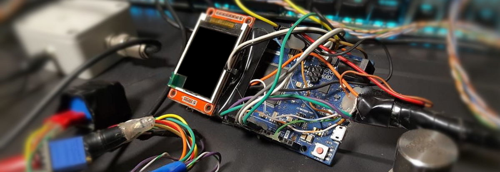
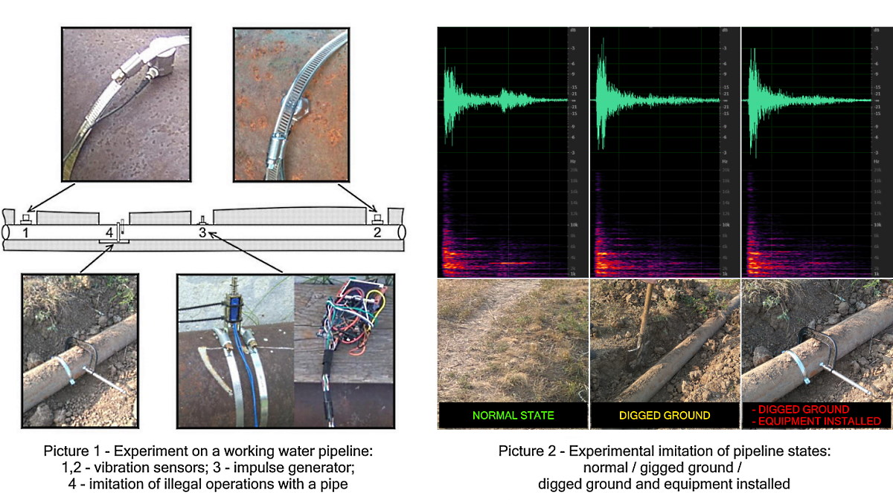
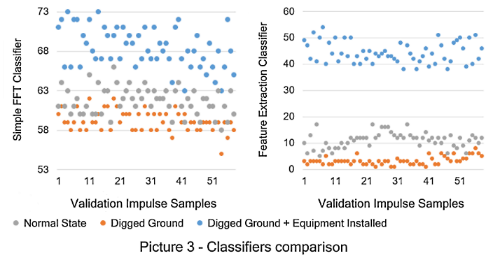

PipeMonitor
PipeMonitor is a hardware/software prototype for real-time detection and recognition of objects and object states using elastic wave propagation analysis.
This is a part of the research development for detection of illegal operations with oil, gas and water pipelines, but system can detect changes in various types of structures and objects on surfaces.

Based on my PhD work and patented invention with added neural networks using NeuralLibrary:
Based on a principle of generation and analysis of elastic waveforms, propagated through controlled object
Working Modes:
Autonomous detection of abnormal object condition without PC connection
Real-time detection and recognition of current object state with C# software
Detection and recognition of object on a sensitive surface with C# software
Software-only mode: loading and analyzing of experimental recorded WAV-files for object classification
Hardware:
Arduino Due for impulse generation, coherent accumulation, correlation, plotting on display, sending signals to C# software via serial connection
A periodic impulse generator (solenoid - long range, relay - working with demo mini prototype)
A vibration sensor, powered from DC or batteries
Software:
Сreating a list of states (objects) and setting the corresponding images
Receiving of accumulated impulses from a microcontroller via serial connection
Working with recorded WAV-files
Increasing signal-to-noise ratio by coherent impulse accumulation (from loaded files)
Fast Fourier Transform for signals
Training a neural network on a spectrum or waveforms [NeuralLibrary ]
FFT classifiers training with feature extraction (patented invention)
Recognition of object states based on a signal classification
A Sound indication of recognized state by speech synthesizer (not shown in demos)
Demo #1: Real-time Object State Acoustic Recognition with C# Neural Network, Microcontroller, Elastic Wave Generator and Vibration Sensor
VIDEO
Demo #2: Real-time Object Acoustic Recognition on a Sensitive Surface with C# Neural Network, Microcontroller, Elastic Wave Generator and Vibration Sensor
VIDEO
Demo #3: Experiment of Determining the State of a Water Pipeline by Analyzing Recorded Acoustic Signals
VIDEO

